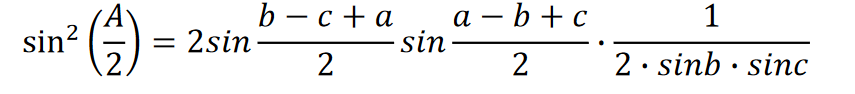
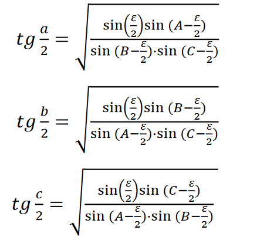

§5.1 Wzory na sinusy, cosinusy i tangensy
Rozważmy dowolny trójkąt sferyczny ABC i załóżmy, że jego kąty wewnętrzne nie przekraczają 180°. Korzystamy ze znanych wzorów trygonometrii:
W sekcji 3.1 powstał wzór cos(a)= cos(b)cos(c) + sin(b)sin(c)cos(A),
Podstawimy (2) do pierwszego równania (1), otrzymujemy
Ponieważ różnica między cosinusami dwóch kątów jest równa dwukrotności iloczynu sinusa połowy sumy dwóch kątów i sinusa połowy różnicy dwóch kątów, otrzymujemy
Przekształćmy wyrażenia b – c+a=a+b+c - 2c = 2p - 2c;
a − b + c = a + b + c − 2b = 2p — 2b,Gdzie p = (a + b + c)/2, jest połową obwodu trójkąta.
Następnie formuła przybiera formę
Podobnie formuły sinusoidalne uzyskuje się dla innych kątów trójkąta. Mamy więc wzory na sinusy połówek kątów:
Podstaw (2) do drugiego równania (1), otrzymujemy
Przekształćmy wyrażenia b + c − a = a + b + c − 2a = 2p — 2a. Następnie formuła przybiera formę
Podobnie formuły sinusoidalne uzyskuje się dla innych kątów trójkąta. Mamy więc wzory na cosinusy połówek kątów:
Z otrzymanych wzorów można łatwo uzyskać wzory na styczne połowy kątów:
Wprowadźmy pod uwagę dodatkową wielkość
Wtedy wzory na tangensy połówek kątów można zapisać jako:
Tangens połowy kąta trójkąta sferycznego jest równy wartości pomocniczej M podzielonej przez sinus różnicy połowy obwodu i boku przeciwnego do kąta.
Mnożymy osobno lewą i prawą część formuł i otrzymujemy:
§5.2 Wzory na sinusy, cosinusy i tangensy połówek boków
Przepiszmy zależności dla kątów trójkąta A1B1C1, które są biegunowe względem danego trójkąta ABC. Półobwód trójkąta biegunowego jest równy p1 = 0,5 (a + b + c;)
Dla elementów wzajemnie biegunowych trójkątów dobrze znane
gdzie є jest sferycznym nadmiarem trójkąta ABC.Skorzystajmy ze wzoru wzór, zapisując go dla trójkąta biegunowego А1В1С1 i podstawiamy za nie wartości wielkości ze wzorów.
W rezultacie otrzymujemy wzory na sinusy połowy boków:
Skorzystajmy ze wzoru wzór , zapisując go dla trójkąta biegunowego A1B1C1 i podstawiamy za nie wartości wielkości ze wzorów.
W rezultacie otrzymujemy wzory na cosinusy połówek boków:
Z tych wzorów otrzymujemy wzory na styczne połówek boków:
Wprowadźmy notację:
na koniec znajdźmy wzory na styczne połowy boku:
Pomnóżmy osobno lewą i prawą część i otrzymajmy:
§5.3 Wzory d'Alemberta-Gaussa i analogie Napiera.
Jeśli w tożsamości trygonometrycznej
zastąp odpowiednie wartości z wzór, wzór, a następnie otrzymamy
Podobnie, jeśli w tożsamościach trygonometrycznych
podstawiamy odpowiednie wartości z wzór, wzór, wzór i wzór, to po prostych przekształceniach otrzymujemy cztery wzory d'Alemberta-Gaussa
Podzielmy pierwszą formułę przez trzecią, a drugą przez czwartą. W rezultacie otrzymujemy pierwszą i drugą analogię Napiera:
Styczna połowy sumy dwóch kątów trójkąta sferycznego ma się do cotangensa połowy trzeciego kąta, tak jak cosinus połowy różnicy przeciwległych boków ma się do cosinusa połowy sumy tych samych boków.
Styczna połowy różnicy dwóch kątów trójkąta sferycznego ma się do cotangensa połowy trzeciego kąta, tak jak sinus połowy różnicy przeciwległych boków ma się do sinusa połowy sumy tego samego boki.
Dzieląc czwartą formułę przez trzecią i drugą przez pierwszą, otrzymujemy trzecią i czwartą analogię Napiera:
Styczna połowy sumy dwóch boków trójkąta sferycznego odnosi się do stycznej połowy trzeciego boku jako cosinus połowy różnicy przeciwległych kątów do cosinusa połowy sumy tych samych kątów.
Styczna połowy różnicy dwóch boków trójkąta sferycznego ma się do stycznej połowy trzeciego boku tak, jak sinus połowy różnicy ich przeciwległych kątów do sinusa połowy sumy tych samych kątów.
Łączna liczba analogii Napiera to dwanaście. Pozostałe osiem analogii można uzyskać stosując metodę permutacji elementów po okręgu.
Dzieląc pierwszą i drugą lub trzecią i czwartą analogię Napiera, otrzymujemy wzór kontrolny Gaussa.
§5.4 Podstawowe przypadki rozwiązywania ukośnych trójkątów
Istnieje sześć różnych przypadków rozwiązywania ukośnych trójkątów, biorąc pod uwagę następujące elementy:
- trzy boki;
- trzy kąty;
- dwa boki i kąt między nimi;
- bok i dwa sąsiednie rogi;
- dwa boki i kąt leżący naprzeciwko jednego z nich;
- dwa kąty i bok leżący naprzeciwko jednego z nich.
Podczas rozwiązywania należy upewnić się, że wartości elementów spełniają warunki istnienia trójkąta sferycznego
Dane są trzy boki trójkąta. Wyznacz kąty trójkąta.
Przykład. Mając dane trzy boki trójkąta α=45°, b=60°, c=30°. Wyznacz kąty trójkąta.
Rozwiązanie. p = 145°/2 lub p = 1,1781 rad, a=0,7854 rad, b=1,0472 rad, c=0,5236 rad. Wtedy sin(p-a)=sin(0,3927)=0,3827; sin(pb)=sin(0,1309)=0,01305; sin(p-c)=sin(0,6545)=0,6088; sin(p)=sin(1,1781)=0,9239, M=0,1814.Dane są trzy kąty trójkąta. Wyznacz boki trójkąta.
Aby kontrolować obliczenia, możesz użyć zależności
Mając dane dwa boki a i b oraz kąt C między tymi bokami. Znajdź bok c oraz kąty A i B.
Aby obliczyć bok, używamy wzoru na cosinus

Dany bok c i dwa sąsiednie kąty A i B. Znajdź boki a i b, kąt C.
Aby obliczyć boki, używamy trzeciej i czwartej analogii Napiera:
Aby obliczyć kąt C, używamy pierwszej i drugiej analogii Napiera
Aby kontrolować obliczenia, można użyć zależność
Dane są dwa boki a, b oraz kąt A, który leży naprzeciw jednego z boków (boku a). Znajdź c, B, C.
Przy obliczaniu kąta B możliwe są trzy odpowiedzi:
- sinB>1, brak rozwiązania;
- sinB=1, następnie B=90°, jedno rozwiązanie;
- sinB < 1, to mamy dwa rozwiązania iw pierwszym przypadku B < 90°, w drugim przypadku B>90°/
Dane są dwa kąty A, B oraz bok a, który leży naprzeciwko jednego z kątów (kąt A). Znajdź b, c, C.
Kontrola
Kąt C i bok c są określone ze wzorów

§5.5 Pytania i ćwiczenia
- Ile jest możliwych przypadków rozwiązania ukośnej kuli trójkąt?
- Jaka jest zaleta stosowania wzorów na styczne półkątów rozwiązać ukośny trójkąt sferyczny?
- Za pomocą jakich wzorów wygodnie jest określić kąty trójkąta, jeśli są podane jego strona?
- Jakie wzory są przydatne do określania boków trójkąta, jeśli dane kąty?
- Co wyrażają analogie Napiera?
- Zapisz wzory d'Alemberta-Gaussa
- Jakiego wzoru używa się do obliczenia nadmiaru sferycznego?
- Jak kontrolować poprawność rozwiązywania problemów przez określanie nieznanych elementów ukośnego trójkąta sferycznego?